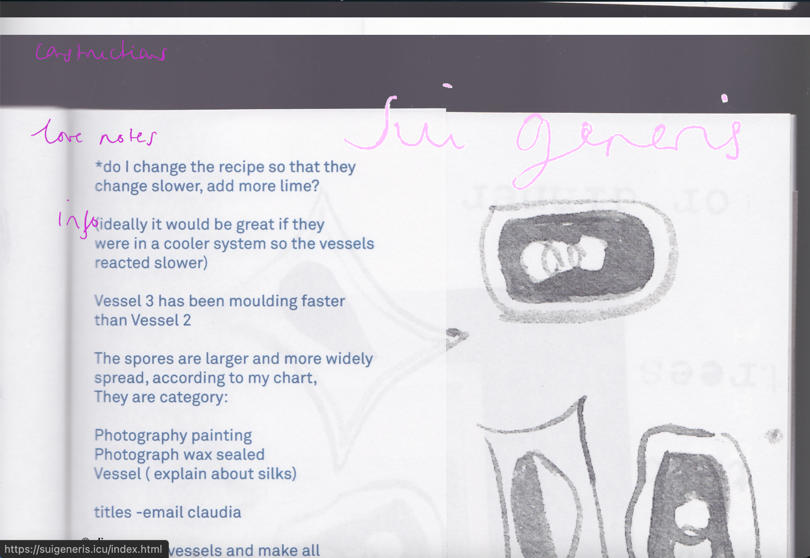
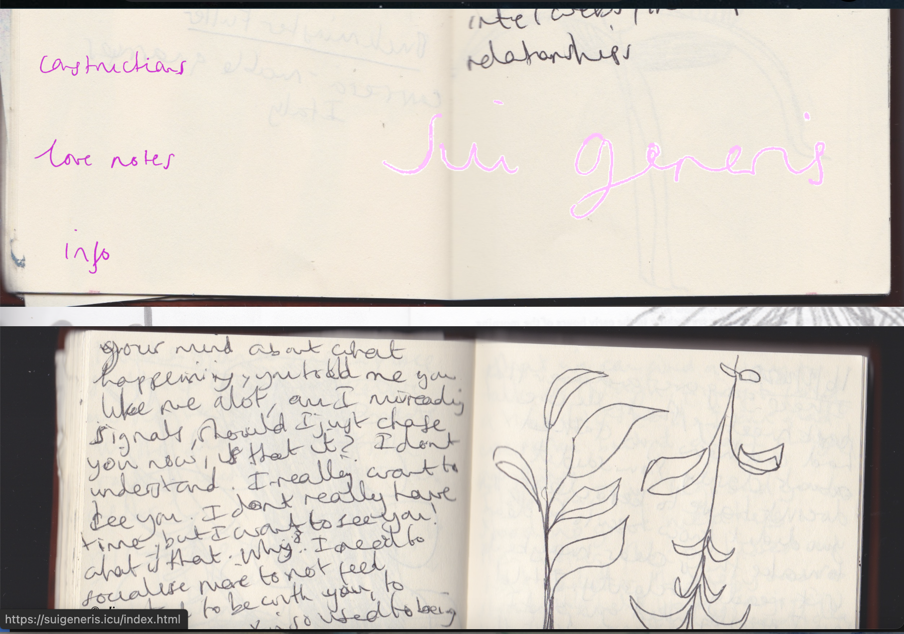

Sui Generis Project
Sui generis is a personal project website. Users can scroll down text and images, this was made in collbortion with an exhibition, viewers accessed the website via a QR code. The website is built using HTML, CSS, and JavaScript.
By building this website I enhanced my understanding of CSS & HTML layouts, I also was able to upload the website onto a server and understand how to prepare a website for hosting.



